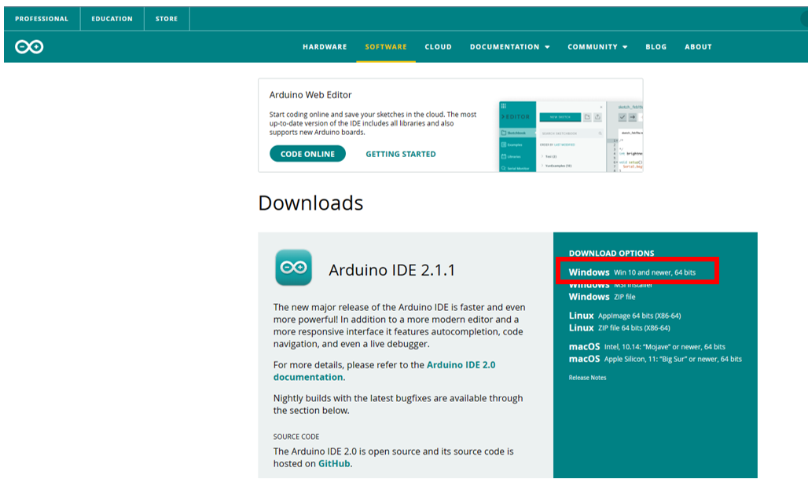
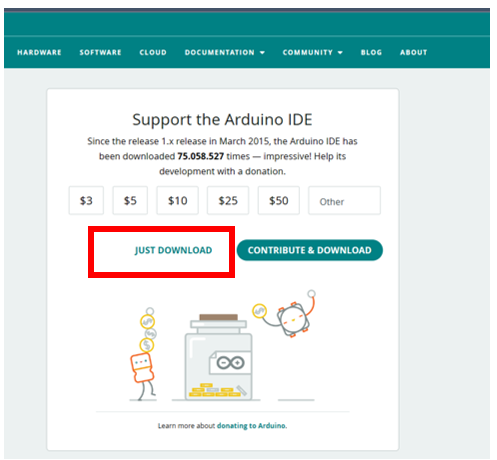
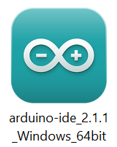
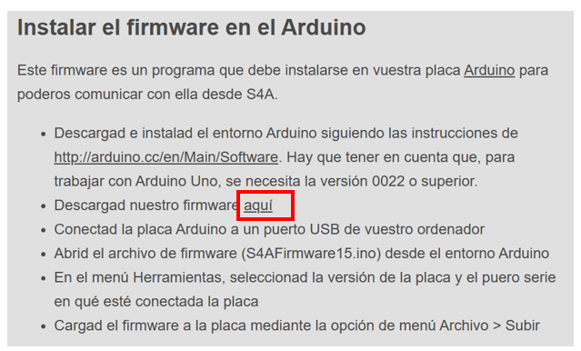
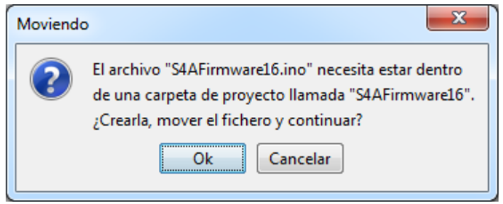

¿Qué es Arduino?
Arduino es una plataforma de hardware libre, basada en una placa con un microcontrolador y un entorno de desarrollo, diseñada para facilitar el uso de la electrónica en proyectos multidisciplinares.
Nos permite conectar el mundo de las computadores y microcontroladores al mundo físico a través de sensores y actuadores. Así se podrán desarrollar desde robots a cualquier otra cosa que nos imaginemos sin incurrir en un alto costo y perder mucho tiempo en el diseño.
La Placa Arduino UNO:
El Arduino Uno es una placa de microcontrolador de código abierto basado en el microchip ATmega328P y desarrollado por Arduino cc. La placa está equipada con conjuntos de pines de Entrada/Salidas digitales y analógicas que pueden conectarse a varias placas de expansión y otros circuitos.
Los pines se programan a través del Arduino IDE (Entorno dedesarrollo integrado) conectando la placa con la computadora a través del cable USB. Es necesario instalar en la computadora el IDE de Arduino y en la placa microcontralora instalar el firmware que permitirá la comunicación entre ambos dispositivos.
Instalación del IDE de Arduino:
- Descargar el entorno de programación (IDE) de Arduino, disponible en: https://www.arduino.cc/en/software
- Hacer clic en tu sistema operativo (Win10, 64bits)

- Pulsar: solo descargar

- Una vez finalizado el proceso de descarga, ir a la carpeta de descargas y abrir el archivo:

- Aceptar los Términos de la licencia, indicar para qué usuarios quieres instalar la aplicación y en qué carpeta se instalará (dejar la que asigna por defecto), pulsar el botón Instalar.
Instalación del Firmware:
- Abrir la página http://s4a.cat/index_es.html
- Hacer cic en el enlace aquí

- Abrir desde la carpeta de descargas el archivo S4AFirmware16
- Pulsar Ok en el mensaje que muestra

- Conectar la placa UNO a la computadora a través del cable USB.
- Seleccionar en el menú Herramientas (Tools), el modelo de la tarjeta (board) y el puerto COM (port)
- En el menu Sketch, verificar el código (Verify/Compile) y después subirlo a la tarjeta microcontroladora (Upload).
Actividad: Descargar el Firmware de Arduino en la tarjeta UNO